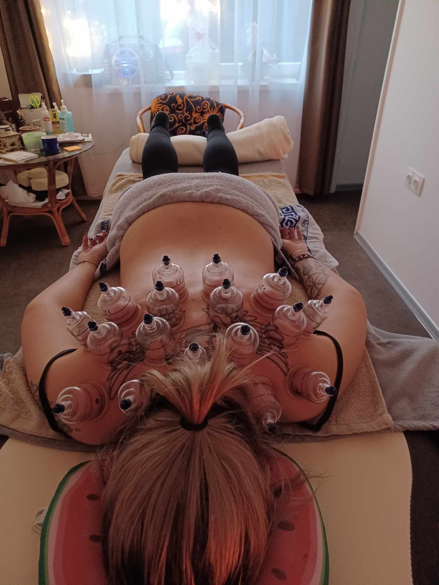
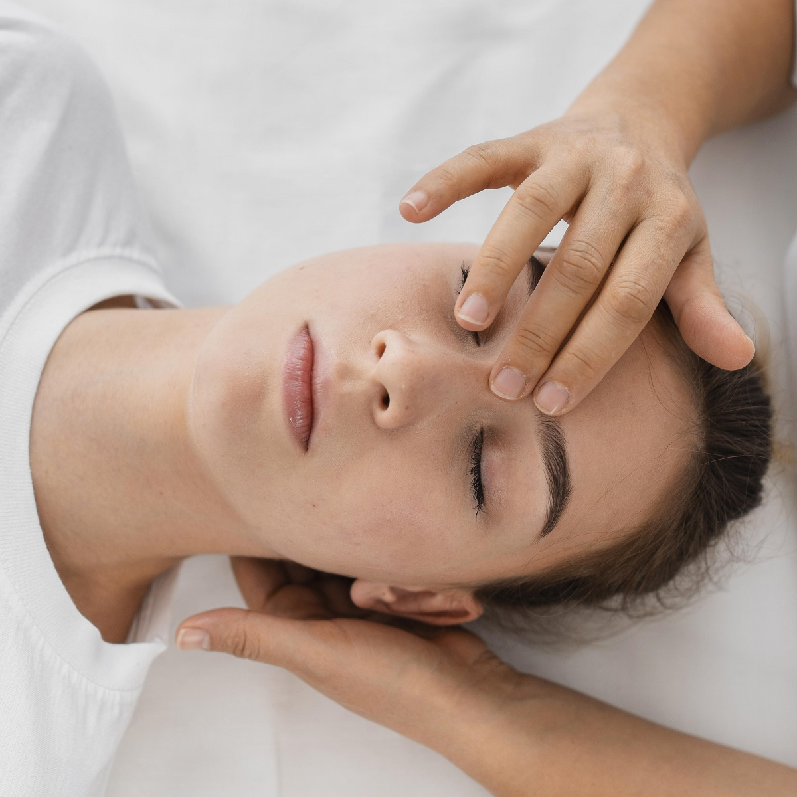
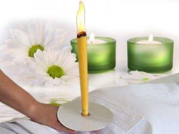

Szolgáltatások

Frissítő svédmasszázs
A legelterjedtebb nyugati masszázsforma. A frissítő masszázs fellazítja a feszes, görcsös izmokat,
megszünteti a
fájdalmat, és jól kiegészíti a mozgást. Krónikus mozgásszervi betegségek esetén általában fontos része a
terápiának. Nyugtató, lazító hatással van a testre és a lélekre egyaránt.

Thai Herbalabdacs masszázs
Lazító, stresszoldó, izomfájdalmaknál, feszes, terhelt izom esetén segíthet,
megfázásos, légúti betegségek esetén (ha nincs láz, akkor ellenjavalt a kezelés),
méregtelenítés, fokozza a salakanyagok távozását,
harmonizálja a szervezet energia egyensúlyát.

Mézes masszázs
Erősen salaktalanító hatású, és a bőr pórusaiban lévő szennyeződéseket is a felszínre hozza.
Feszessé teszi a bőrt, javítja annak rugalmasságát.
Tisztítja a szervezetet, méregtelenít.
Segíti szabályozni a test energiaáramlását és visszaállítja az egészséges egyensúlyt.

Köpölyözés
Ősi gyógymód, melyet nagyon hosszú ideje alkalmaznak. A köpölyözéssel masszírozhatunk, kilazíthatjuk az
izmokat,
és kimasszírozhatjuk a mélyen fekvő csomókat. Mivel rengeteg jótékony hatása van, többek közt
méregtelenítő
és
zsírégető is, ajánlott a rendszeres alkalmazása.A bőrre helyezett edényekben vákuumot képzünk, ez felfelé
szívja
a bőrt és beindítja a jótékony folyamatokat. A kb. 2-7 cm közötti edényeket 5-15 percig hagyjuk rajta a
kezelendő testrészen, mint pl. a háton, a vállon, majd óvatos mozdulatokkal eltávolítjuk. A köpölyözés
hatására
a bőrön jellegzetes, kerek, piros vagy barnás foltok keletkezhetnek, melyek általában néhány napon belül
elmúlnak.Szalonomban csak masszázzsal együtt vehető igénybe.

Lágy csontkovácsolás
Ezzel a módszerrel nem a csontokra, hanem az izmokra és az izzületekre igyekszünk hatni. Alapja a nyújtás,
a
lazítás és a gerinc kimozgatása.A menete, hogy masszázzsal fellazítjuk az izmokat, majd alaposan
átmozgatjuk
az
izületeket.

Japán arcmasszázs
A technika nem csak az arcbőrre hat, hanem a bőr alatt lévő izmokra is, így emeli a bőr tónusát. Mindegy
milyen
krémmel végezzük, a hatás megduplázódik.
Jótékony hatások:
-a vénás erek keringésének jelentős javulása*,
-bőrhőmérséklet megemelkedése,
-tápanyagok könnyebb felszívódása,
-kozmetikai anyagok gyorsabb felszívódása,
-sima, feszes és bársonyos arcbőr

Ránctalanító arcmasszázs
A gyengéd mozdulatok során javul az izmok oxigén- és tápanyagellátása, felgyorsulnak a bőr öntisztító
folyamatai, és könnyebben leválnak az elhalt hámsejtek. Mivel fokozódik a sejtek, rostok képződése, és
gyorsul a vérkeringés, erős öregedésgátló hatása egyaránt van az arcmasszázsnak.

Indiai fejmasszázs
Stressz, kimerültség, idegesség, s ezekből adódó szemfáradtság, fejfájás, nyak- és vállfájdalmak
kezelésére
javasolt.Fizikai hatása: Élénkíti a vérkeringést.Erősíti az immunrendszert.Ellazítja a görcsös és
fájóizmokat.Mobilizálódik a felső test, és a nyak.Megnyugtat.Eltávolítja a szennyező anyagokat a
sejtekből,
friss oxigént juttat a sejtekbe Hatásosan kezeli a fejfájást, migrént és az álmatlanságot.Elősegíti a
testi,
lelki békét, és nyugalmat! Testi és lelki egyensúlyt hoz létre!

Frissítő talpmasszázs
Általánosan átmasszírozzuk a talp és a lábfej teljes területét. A talp masszázsával hatást lehet
gyakorolni
a
belső szervekre, a nyirok- és vérkeringésre, a központi idegrendszerre.

Celluit masszázs
2 féle van: Hagyományos és vákumos, tekercseléses
MIKOR ÉRDEMES A CELLULIT MASSZÁZST IGÉNYBE VENNI?
Minden olyan személy részére ajánlott, aki szeretné elkerülni a narancsbőrt, vagy már a meglévőt
eltüntetni.
Minél korábban elkezdünk harcolni a narancsbőr ellen, annál könnyebben és gyorsabban szabadulunk meg tőle.
EGY ALKALOM IS HATÁSOS?
Igen. Egy alkalom után is látszik a bőr változása, javul a feszessége, simábbá válik. A súly felesleggel
küzdők
egy alkalom után is vékonyodhatnak 1 cm-t a kezelt területről.
HOGYAN A LEGHATÉKONYABB A CELLULIT MASSZÁZS?
A legtöbben már akkor jönnek erre a kezelésre, amikor már tényleg jócskán van narancsbőr akár több
területen
is
(a kritikus területek, comb, csípő, has, derék). Ezért a leghatásosabb, ha valaki egy kúrát, vagyis
legalább
10-12 alkalmat csinál végig, heti 1 vagy 2 alkalmas rendszerességgel. Ez átlagosan 2 hónapot jelent, így
az
eredmény szemmel látható és tapintható lesz, valamint a fogyás is centiméterekben is mérhető.

Babamasszázs
Egy olyan testi kontaktuson alapuló kommunikáció, amely szavak nélkül is képes érzelmeket, nyugalmat,
kiegyensúlyozottságot sugározni.A rendszeres csecsemőmasszírozás növeli a gyermek szervezetének
ellenállóképességét. Az érintés, simogatás, masszírozás a figyelem, az odafordulás fizikai
megnyilvánulásai.Az
ilyen típusú érintéseknek kétségkívül feszültségoldó hatásuk van, mind a babára, mind a szülőre nézve. A
babamasszázs sokkal többet jelent a kicsinek a testi örömnél, segít megőrizni egészségét, testi-lelki
jólétét. A
babamasszázs olyan bensőséges légkört teremt, amely során még szorosabbá alakul ki az egymáshoz tartozás.A
masszírozott csecsemők az érintésekkel együtt bizalmat, szeretetet kapnak, amelyet magukkal visznek
felnőtt
életükbe is, s ezáltal testük, lelkük kapcsolataik felnőtt korukban is egészségesek lehetnek. Koraszülött,
esetleg sérült kisbaba esetén is a masszázs segítséget nyújt abban, hogy hamarabb kialakuljon az
egyensúlyi
állapot a kisbabában.
A babamasszázzsal jól stimulálhatjuk a kisbaba bőrét, a légző- és keringési rendszerét, elősegíthetjük
izomrendszere fejlődését, és támogatja a mozgásfejlődést. A masszírozott kisbabák súlygyarapodása és
fejlődése
kiegyensúlyozottabb, továbbá a masszázs segíti a bélgázok kiürülését, és a puffadás okozta rossz
közérzetet
javítja.

Kinesiology-tape
Ki az akinek ajánlom? Milyen panaszokra jó a tape-terápia?1. Akut és krónikus izom- és ízületi sérülések2.
Duzzanatok, ödémák3. Részleges és teljes ficamok, szakadás4. Kopások, húzódások, izomgörcsök, zúzódások,
rándulások5. Vénagyulladások, kisebb mértékű viszeresség, hideg végtagok6. Hegek, véraláfutások7. Rossz
testtartás vagy egy testrész, ízület nem fiziológiás állása.Gyerekeknek és időseknek is alkamazható.

Testgyertya
A testedet összefüggő energiacsatornák, úgynevezett meridiánok alkotják. A keleti elmélet szerint ezeken a
meridiánokon át áramlik az életerő a testedben. Ha az áramlás akadálymentes, akkor egészséges vagy. Ha
azonban
az energia áramlása megakad, akkor a tested különböző betegség tüneteket produkálhat. A testgyertyázással
az
akupunktúrához hasonlóan feloldhatóak ezek a bizonyos energia-blokkok, és helyreállhat a szervezetedben a
normális energia áramlás. A mozgásszegény életmódnak és a rossz táplálkozási szokásoknak köszönhetően
valószínűleg a Te tested is tele van méreganyagokkal. A nyirokrendszeredre túl sok teher hárul, ezért a
szervezeted nagyon lassan szabadul a mérgektől. A felhalmozódott mérgek pedig kellemetlen fizikai
tüneteket
okozhatnak. A testgyertya azért hat, mert elősegíti ezeknek a méreganyagoknak az eltávolítását.
Kinek nem ajánlott a masszázs, kontraindikációk...
-
A masszázzsal kapcsolatos korlátozásokat három csoportba osztjuk.
- Az első csoportban azok vannak, akiket semmiképpen nem masszírozunk.-lázas beteg (37,5)-kezeletlen magas vérnyomás (160Hmm)-fertőző betegség, fertőző bőrbetegség-műtét után 6 hétig-menszesz első három napja-kismamákat törzsön nem-gyulladásos betegeket-daganatos betegeket. Továbbá nem ajánljuk masszírozni, tudatmódosító szerek, alkohol, drog hatása alatt lévő személyt!
- A második csoportba azokat soroljuk, amikor óvatosabban kell masszírozni, vagy ki kell hagyni területeket. Ilyenek:-visszeres láb-a test bármelyik részén található sebek, sérülések.-fagyási sérülés, égési sérülés-ízületi gyulladásos terület Kismamákat az első három hónap után, speciális kismama masszázzsal lehet csak masszírozni.
- És a harmadik csoport: az orvosi engedélyhez kötöttek!-csontritkulás-krónikus betegséggel küzdők-szívbetegek-epilepsziások-nőgyógyászati betegséggel küzdők.-neurológiai betegségnél. És hát, orvosi engedélyhez kötött a masszázs a transzplantáltaknál. Nem kifejezetten a transzplantáció miatt, hanem azért, mert immunszupresszáns gyógyszereket szednek.